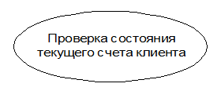

Диаграмма, отражающая отношения между актерами и прецедентами и являющаяся составной частью модели прецедентов, позволяющей описать систему на концептуальном уровне.
Основные обозначения:
- Вариант использования (use case)
 Представляет собой общую спецификацию совокупности выполняемых системой действий с целью предоставления некоторого наблюдаемого результата, который имеет значение для одного или нескольких актеров.
Отвечает на вопрос «Что должна выполнять система?», не отвечая на вопрос «Как она должна выполнять это?».
Имена – отглагольное существительное или глагол в неопределенной форме.
- Актер (actor)
Любая внешняя по отношению к проектируемой системе сущность, которая взаимодействует с системой и использует ее функциональные возможности для достижения определенных целей или решения частных задач.
Примеры актеров: кассир, клиент банка, банковский служащий, президент, продавец магазина, менеджер отдела продаж, пассажир авиарейса, водитель автомобиля, администратор гостиницы, сотовый телефон.
- Отношения
-
Отношение ассоциации
Ассоциация (association) является одним из фундаментальных понятий в языке UML 2.х и может использоваться на различных канонических диаграммах при построении визуальных моделей
Применительно к диаграммам вариантов использования отношение ассоциации может служить только для обозначения взаимодействия актера с вариантом использования.
-
Отношение включения

Отношение включения (include) специфицирует тот факт, что некоторый вариант использования содержит поведение, определенное в другом варианте использования.
-
Отношение расширения
Отношение расширения (extend) определяет взаимосвязь одного варианта использования с некоторым другим вариантом использования, функциональность или поведение которого задействуется первым не всегда, а только при выполнении некоторых дополнительных условий.

-
Отношение обобщения
Отношение обобщения (generalization relationship) предназначено для спецификации того факта, что один элемент модели является специальным или частным случаем другого элемента модели.
ПРИМЕР. Диаграмма вариантов использования для турагенства
Порядок построения диаграммы вариантов использования по предметной области:
- Определение актеров (actor) системы
- Определение вариантов использования (use-case)
- Определение виды взаимодействия (ассоциации, расширения, включения)
- Построение полной диаграммы.
Диаграммы последовательности следует применять тогда, когда требуется посмотреть на поведение нескольких объектов в рамках одного прецедента.
На диаграмме показаны экземпляры объектов и сообщения, которыми обмениваются объекты в рамках одного прецедента (use case).
Элементы диаграмм последовательности:
- Объекты
В диаграмме объектами выступают участники системы, такие как акторы (Actor), границы (Boundary), контроллеры (Control) и сущности (Entity). Они называются участниками (Participants) и отображаются в виде пиктограмм или прямоугольника с названием.
- Акторы (Actor) представляют пользователей или другие системы, взаимодействующие с системой, которая описывается на диаграмме. Они могут вызывать действия, которые система выполняет в ответ на их запросы. Например, актор может запросить у системы информацию и получить ответ.
- Границы (Boundary) определяют внешние границы системы и представляют собой точки входа или выхода, через которые система взаимодействует с внешним миром. Например, граница может представлять интерфейс пользователя, через который пользователь взаимодействует с системой.
- Контроллеры (Control) обрабатывают запросы и управляют потоком данных в системе. Они представляют собой узлы, через которые проходят данные и управляющие выполнением операций в системе. Например, контроллер может обрабатывать запросы, которые поступают от акторов и возвращать результаты.
- Сущности (Entity) представляют данные и хранят состояние системы. Они могут быть представлены как базы данных или другие системы хранения данных. Например, сущность может обрабатывать запросы на чтение или запись данных.
Каждый объект на диаграмме представлен вертикальной линией жизни, отображающей период времени, когда объект существует и выполняет операции. Кроме того, объекты могут содержать дополнительную информацию, такую как поля или состояния объекта, которые передаются между объектами в сообщениях.
- Линии жизни
Линия жизни (lifeline) – это вертикальная линия на диаграмме последовательности UML, которая представляет объект или участника взаимодействия и связывает его с сообщениями во времени. Линия жизни начинается с появления объекта на диаграмме и продолжается до его удаления или окончания взаимодействия.
На линии указываются различные элементы, такие как активности, состояния и метки времени, помогающие уточнить временные параметры взаимодействия объектов. Линия жизни является основным элементом на диаграмме последовательности, который помогает визуализировать хронологию взаимодействия в системе.
- Сообщения
- Синхронное сообщение — актор-отправитель передаёт ход управления актору-получателю, которому необходимо провести в прецеденте некоторое действие. Пока проводимое актором-получателем действие не будет завершено (соответственно, не будет получено ответное сообщение), актор-отправитель теряет возможность производить какие-либо действия. Графически изображается как стрелка с закрашенным треугольником, после которой идёт прямоугольник, отражающий деятельность объекта, в конце которого находится ответное сообщение.
- Ответное cообщение — данное сообщение является ответом на синхронное сообщение. Обычно, содержит какое-либо возвращаемое изначальному актору-отправителю значение, также возвращающее ему управление (возможность действовать).
- Асинхронное сообщение — актёр-отправитель передаёт ход управления актору-получателю, которому необходимо провести в прецеденте некоторое действие. Основное отличие от синхронного сообщения состоит в том, что актор-отправитель не теряет возможности совершать другие действия.
- Активации
Активации на диаграмме используются для отображения времени выполнения операций и вызовов методов внутри системы. Они позволяют увидеть, какие объекты на диаграмме активны в тот момент, когда выполняется та или иная операция или вызывается метод.
Каждый объект имеет свою линию жизни, отображающую его существование во времени. Активация представляет собой область, ограниченную временной продолжительностью, которую занимает выполнение операции или вызов метода. Таким образом, активация показывает, когда и как долго объект активен в процессе выполнения операции.
Активации используются для моделирования последовательности взаимодействия внутри системы. Они позволяют лучше понять порядок выполнения операций и вызовов методов, а также определить возможные ошибки.
ПРИМЕР. Диаграмма последовательности для варианта использования «Заказать товар со склада»